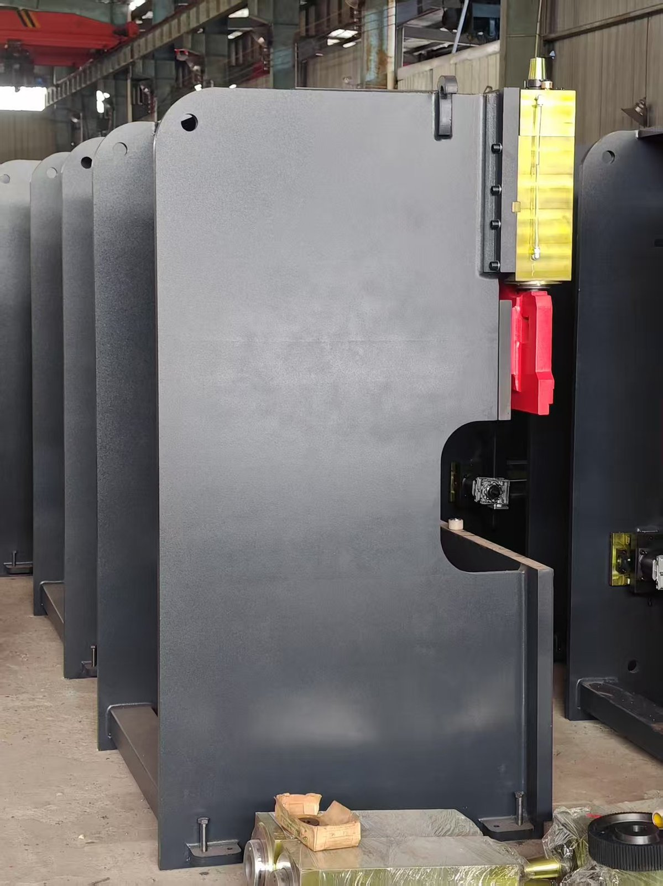

Свежеокрашенные станины листогибочных прессов 50T/1600: отпуск всей станины перед покрасочной камерой

Сегодняшние фотографии: ряд станин листогибочных прессов, только что вышедших из покрасочной камеры — партия компактных станин 50T/1600, выпущенная серийно и ожидающая экспортной отгрузки. Каждая из них прошла отпуск всей станины (снятие внутренних напряжений) до нанесения первого слоя краски.
1. Почему мы выполняем отпуск всей станины перед покраской
Сварка «запирает» внутренние напряжения в стальной станине; если эти напряжения останутся, станина постепенно деформируется и ползун теряет параллельность. Именно поэтому каждая машина ZTGAOKE — а не отдельные сварные узлы — проходит отпуск как цельная станина для снятия сварочных напряжений, затем фрезеруется и только после этого окрашивается. В результате твёрдость и жёсткость станины подтверждены до того, как она попадёт на покрасочную линию, а не скрыты под слоем краски.
2. Как оценить качество станины по таким фотографиям
Краска определяет, как станина выглядит; отпуск определяет, как долго она остаётся ровной — мы снимаем напряжения до нанесения цвета.
- Отпуск всей станины, а не локальная обработка — цельная сварная станина отжигается за один цикл, поэтому ни одна зона не сохраняет скрытых напряжений;
- Боковые стойки из толстолистовой стали — видимые здесь вертикальные стенки вырезаны из толстого листа и обработаны после отпуска, что сохраняет точность направляющих ползуна;
- Равномерное промышленное покрытие — однородное матовое серое покрытие защищает сталь от коррозии при длительной морской перевозке;
- Стабильность от партии к партии — целый ряд одинаковых станин свидетельствует о стандартизированных кондукторах (оснастке) и повторяемом качестве, а не о единичном изготовлении.
3. Что эта партия значит для заказчиков
- Серийное производство 50T/1600 — этот компактный типоразмер выпускается партиями, поэтому срок изготовления остаётся коротким;
- Готовность к экспорту — партия запланирована к зарубежной отгрузке и упакована по экспортному стандарту;
- Жёсткость, удерживающая точность — станина после отпуска сохраняет стабильные углы гибки год за годом, а это то, что действительно защищает качество ваших деталей.
Ищете листогибочный пресс со станиной после отпуска в размере 50T/1600 или другом? Сообщите нам ваш материал и толщину — мы ответим коммерческим предложением в течение 24 часов.